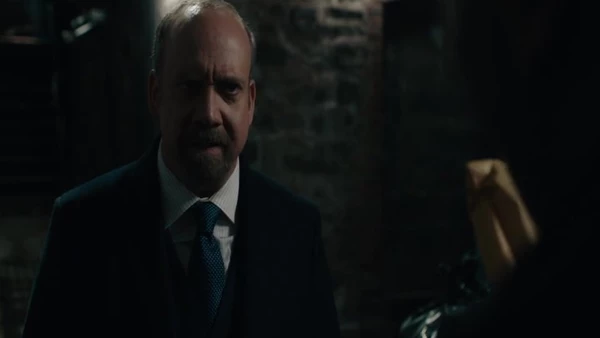

01
纽约 · 秘密交易
五万美元，买一个错误的位置。

剧情事实查克把载玻片交给 Roland Aduba，先付五万美元，另承诺完成后再付钱并帮助其家人获得美国签证。对方计划趁阿克斯三周后赴 Art Basel、家中维修时潜入，把物证放进住处的药柜或避光位置。[1][2]
这一场为什么重要 · 个人解读
这一行动已经超出保存证据，而是要改变证据出现的位置。查克利用对方团聚的需要换取风险劳动，但对方仍有自己的判断与拒绝能力。对白关于十八小时的说法是人物给出的保存条件，不能因此替这套栽赃计划补上科学或合法性证明。
因此 → 计划原本需要三周，法庭却不会等。